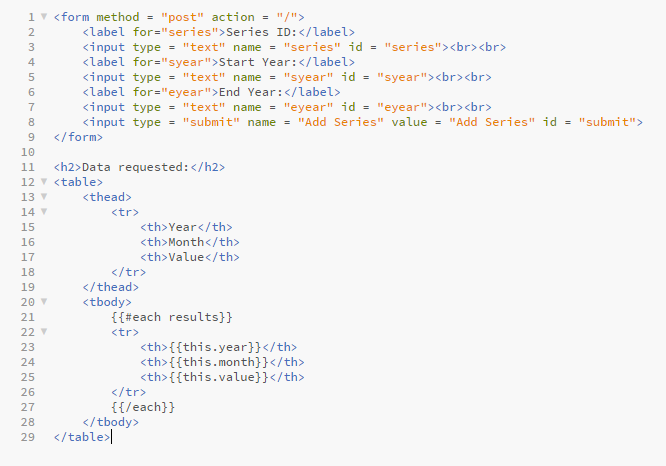
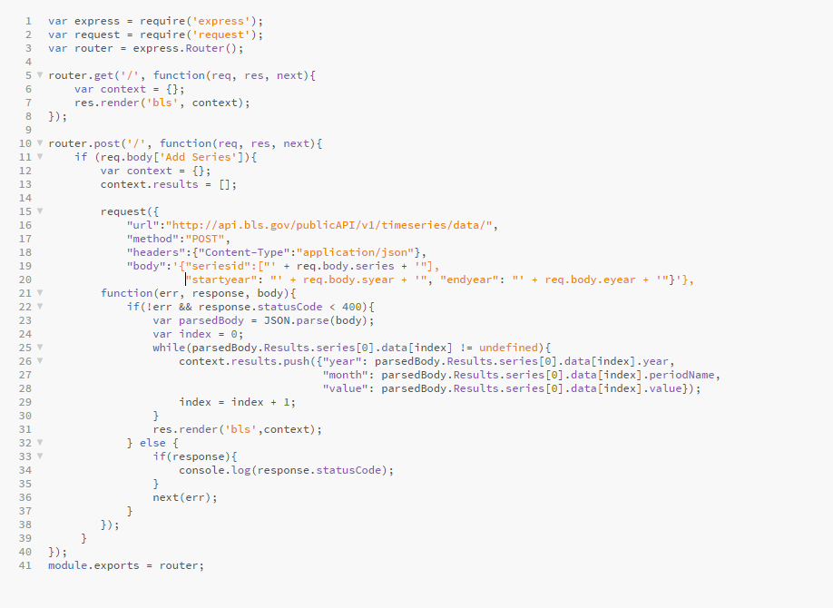
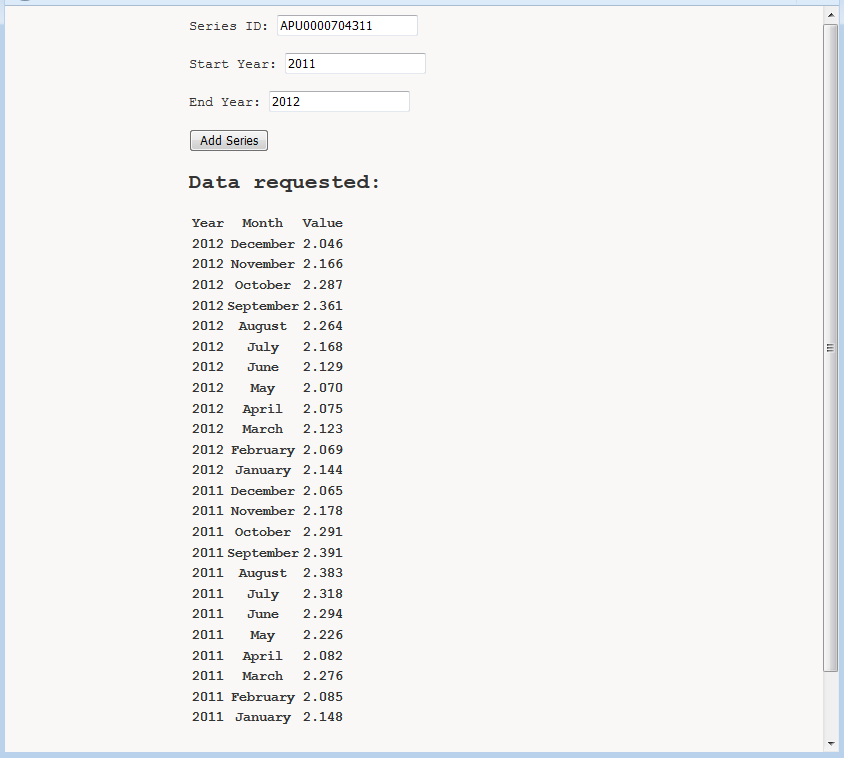

We are going to look at the app that asks a user to enter one series ID and years for which he or she wants to receive data. Then, the app displays requested data in a user friendly form instead of JSON object.
First, we create the file "bls.handlebars" that will have the form for entering series ID, the first year, the last year and the template for displaying data:
Next, we create a file "app.js" where we are using Express module to create an Express application. We have three use calls. One for routes app.use('/', routes); and two for handling errors:
To keep things organized, we write code for routes in a separate file "routes.js":
We have two routes; router.get will load the page and let a user fill the form and router.post makes a request to the BSL API if the submit button is hit. The request is done in the same way as in the previous section. The difference is that now we parse the body of the response var parsedBody = JSON.parse(body), iterate through parsed body data while(parsedBody.Results.series[0].data[index] != undefined) in order to get data that we want to display in the table (year, month, value).
If we run our app, we get the following resulting page with average prices for series ID APU0000704311 (ham) 2011-2012:
That is for now. Hopefully, this guide has helped you get started using the BSL API.
Prev